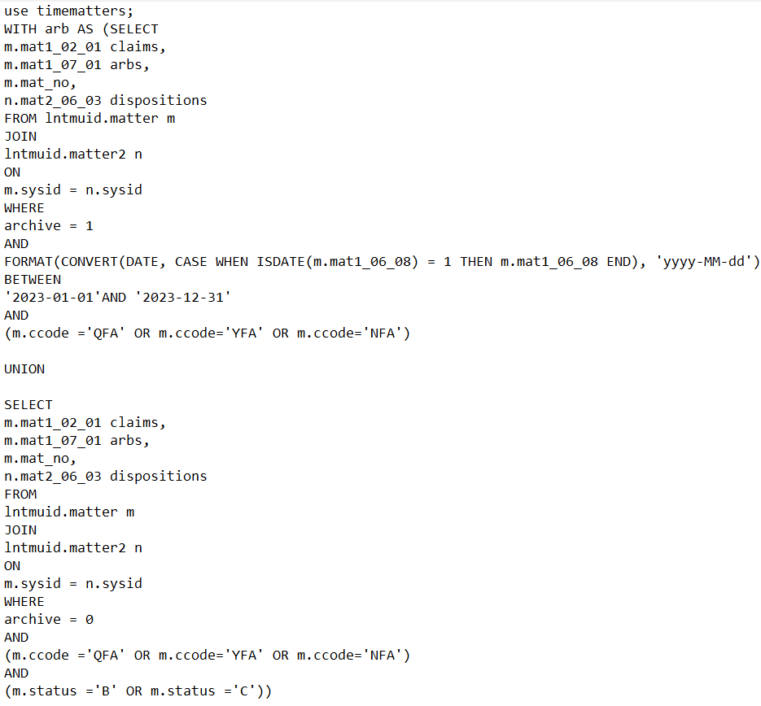

Writing reports using case management software and SQL
Arbitrator Reports
A firm was curious about which arbitrators they had the most cases with, as well as the outcome of these cases. I was tasked with using SQL to query through their database of cases to find this information. All names and data are proprietary information, and have been removed.
These reports are written based on a search done in Time Matters, their software of choice, so the first thing to do was recreate that search using SQL. Since the search included cases that both were or weren't archived, but only archived cases for the year 2023. I felt the best way to do this was to create two tables, one for each archive status, and then merge them in a CTE. The dates from Time Matters needed to be converted and formatted for use. The case statement was because some entries were missing dates that I wanted to ignore when converting.
This would serve as the main CTE I would use for these reports, with some slight alterations depending on the query, as I wanted to only include columns being used to keep the size of tables being merged as small as possible.

Since they wanted to see who had the most cases, I made another CTE that assigned a ranking to each arbitrator based on the total number of cases for each individual.

First, I wanted to make a simple chart that would show how many cases each arbitrator had. I had the table I needed, but I wanted to add some query parameters, which simply required a bit of SQL.

Next, I wanted to visualize the total count along with a breakdown of dispositions for each arbitrator. I used a stacked bar chart to show this. For this query, I joined the two CTEs, so each arbitrator would have a rank assigned to them without having to group them in SQL. I had found that some names had a blank space at the end, so I trimmed all white space. There were also some cases with no arbitrators that I wanted to exclude. I also added another parameter.


The first set of parameters were a High/Low Rank search, to control how many arbitrators will show up on the report, based on their ranking of overall cases. Next I added a parameter to type the names of arbitrators, and create a report based on any combination of names. Finally, a parameter to filter which dispositions will be seen.

I then continued to break things down more, by adding the defenses and services that corresponded with the dispositions for each arbitrator, to get an idea of how those outcomes were reached. I also separated the count into two different types of cases, which is based on the claim representative for the case.

On the table I included the percentage of total cases of each different type, and when expanded, it shows the percentage each disposition and defense is for each respective case type. One table was made for defenses, and another for services.

I included the same ranking and arbitrator parameters on all reports. The defenses and services parameters were linked, so when you searched for a value in defenses, the cases with that defense would also show up on the services chart, and vice versa. I also put a parameter to search by matter number to make it even easier to pull up the defense and service for a single case.

Expert Reports
After working with it for a bit, I realized there could be an issue with the query, it wasn't including any cases from the new year that were being archived. When I spoke with the client, they were concerned about cases being double counted. But I assured them that the reports are constantly updating with any changes made in Time Matters, so each case would only be counted by it's current status. With these changes, I was able to make the intital CTE a bit more streamlined.

Each case could have multiple events, so I made a CTE to select just the most recent event for a case. I joined this new table with the table containing all the data I needed. I joined the tables on both case number and date, so any rows with a date other than the latest for each individual case would be dropped.

I included a total case count for each arbitrator, the count for each expert appearance by expert, and the percentage for each disposition result for those appearances.

No Faults
The client was having issues with some of his staff feeling that they had too many cases. To look more into this, he wanted data on how many no fault cases each attorney was opening and closing each year, as well as the average age for each case that attorney was working on. For this report, I made a report with drill-throughs to subreports.
The main report was the report showing how many cases each attorney was opening and closing each year. First, I made the CTE, since I like keeping the main query separate from what reaches the final report. Opp(short for opposition) represents the plaintiff's attorney. The client knows some attorneys are more difficult than others to work with, so that can be a contributing factor to why some of his staff have a larger caseload. Since not every case had a closed date, I made sure only values that were dates would get converted. I used a case statement to determine if a case was opened or closed by marking cases as 'Closed' if they either had a closed date set or have been archived, otherwise mark them as 'Open'. Outside the CTE, I formatted the dates how I wanted them to appear in the report, and added the parameters.

To do the calculations, I wrote expressions using the built-in functions of Microsoft Report Builder.
=Sum(IIF(DatePart("yyyy",Fields!opendate.Value)="2021",1,0),"staff")
This expression found the number of cases opened in a certain year. Using 'IIF' and 'DatePart', it checks if the year part of the opendate column is a specific value, 2021 in this case, and if it is, assigns it as '1', if not '0'. 'Sum' then adds all them up to get a count of cases opened in that year, set over the 'staff' grouping. The same expression is used for closed files, just changing 'opendate' to 'closedate'.
=IIF(Fields!status.Value="Closed",Sum(IIF(DatePart("yyyy",Fields!closedate.Value)="2021",1,0),"opp"),"")
The inner part of the expression is the same as the first one, except over the 'opp' grouping since this is for the cases opened and closed based on the plaintiff's attorney. Since the cases were being grouped by their status, I wanted to make sure values showed up in the appropriate spots, i.e., case counts under the 'Closed' grouping will only appear in the column labeled 'Closed'. The 'IIF' statement checks the status, and only shows values in the text box if that status matches.

The first subreport was the report showing the average age of the cases for each staff member. The 'Staff' parameter on the subreport is populated by the name of the staff member that is clicked on in the main report.
In the CTE, since open cases didn't have a close date, I used a case statement so for any open case without a close date, the close date would be set to GETDATE(), which would update with the current date everytime the report is run. Different courts operate at different speeds, so I added the court for each case. But, in the database, court names were long, formatted as 'CIVIL COURT: KINGS COUNTY', so I shortened it down to 'C/K'. I used DATEDIFF to find the difference in days between the open and closed dates.

I used a window functions to calculate the average ages of cases per staff member and per staff member based on the year the case closed,

=Max(IIF(DatePart("yyyy",Fields!closedate.Value)="2023",Fields!avg_diff_per_year.Value,0))
This expression checks the year of the 'closedate', and then pulls the maximum value of the 'avg_diff_per_year' for that year.
=Round(AVG(IIF(DatePart("yyyy",Fields!closedate.Value)="2023",Fields!date_diff.Value,0),"opp"),2)
This expression finds the average of all the values in 'date_diff' based on the 'opp' group, and rounds it to two decimals.

The client also wanted to see, on the main report, a breakdown of how many cases were opened each year for each close year. For example, if the attorney closed 50 cases in 2024, they wanted to see how many of those cases were opened in 2024, in 2023, in 2022, etc. This report was accessable by clicking on the textbox of a specified year in the main report. The action for this subreport has the same parameters as the other one, with one addition. An expression is used to set the CloseYear parameter on the subreport equal to the value of the textbox that is clicked on. The SQL query was the same as the main report.